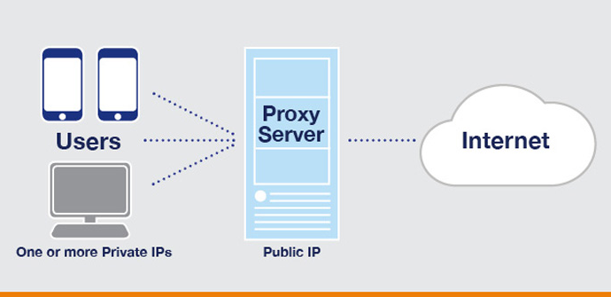
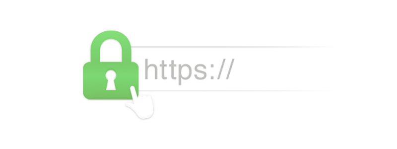

El término cookie ha ganado tracción en estos tiempos. Si entras a una página web por primera vez, lo más probable es que te pida que aceptes su política
de cookies. ¿Pero que es esto de las cookies?
Las cookies son pequeños paquetes de información que se envian entre el usuario y la página web para que se almacenen en el ordenador del ususario. Esto permite
consultar la información previamente almacenada del ordenador y personalizar la experiencia del usuario.
Esto perjudica relativamente la experiencia anónima del usuario. Las cookies suelen almacenar información de identificación, de habitos de navegación o en general, información
personalizada y vulnerable para el usuario.A pesar de esto, las cookies son utilizadas globalemnte asi que las técnicas de seguridad están en pleno desarrollo y actualización.
Sin embargo las cookies no es lo único que te ha de preocupar si quieres navegar de forma anónima. La huella digital que produces al navegar puede ser rastreada por tu proveedor,
por un hacker que está espiando el servidor al que te conectas o incluso por un hacker que te esté espiando a ti.
Si tu caso es el último tengo malas noticias, sin embargo para el resto de casos un proxy puede ser de gran utilidad. Un proxy actua como intermediario entre el usuario y
el destinatario. Camufla tu presencia en internet y les hace la vida más complicada a aquellos que te quisieran rastrear.

Encima de esto, ahora un proveedor de páginas web puede otorgar seguridad extra para las conexiones a sus páginas. La protección HTTPS usa una modificación del protocolo
HTTP estándar, encriptando de punta a punta los datos entre el servidor y el cliente. Podemos distinguirlo con el certificado HTTPS.
